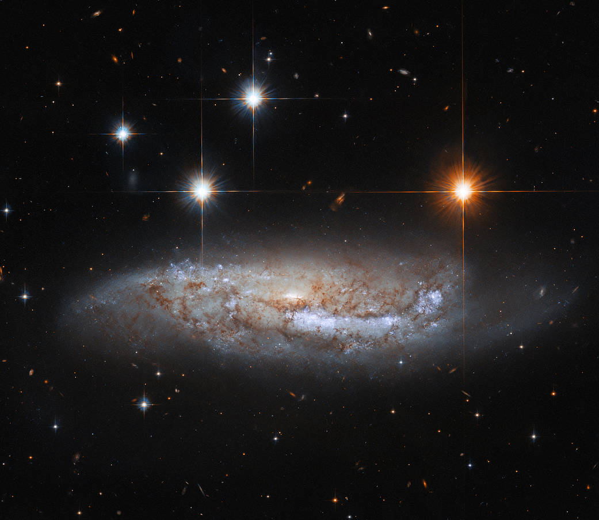

-
¿Un segundo planeta potencialmente habitable en el sistema estelar Alpha Centauri?
Reconstrucción de Próxima b, el exoplaneta hallado en 2016 alrededor de Próxima Centauri, que aparece junto al horizonte. Un poco más arriba, a la derecha, Alpha Centauri A, donde se podría haber descubierto un nuevo planeta potencialmente habitable - Todo lo que querías saber sobre las estrellas 